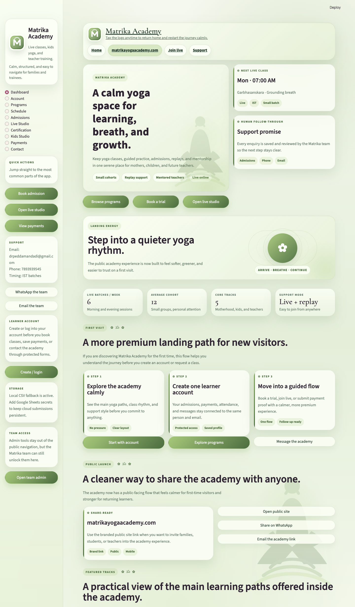
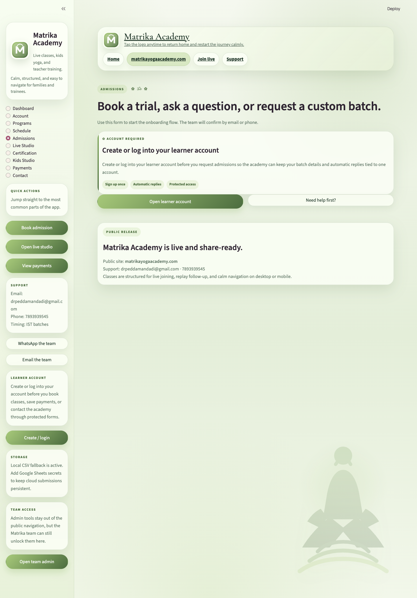
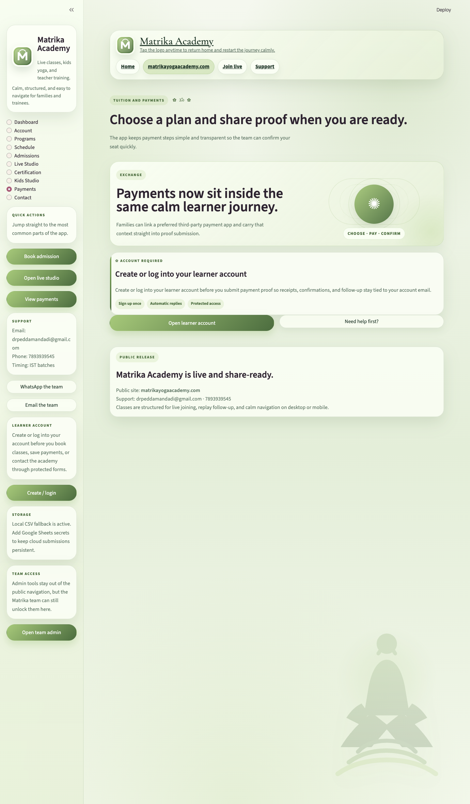
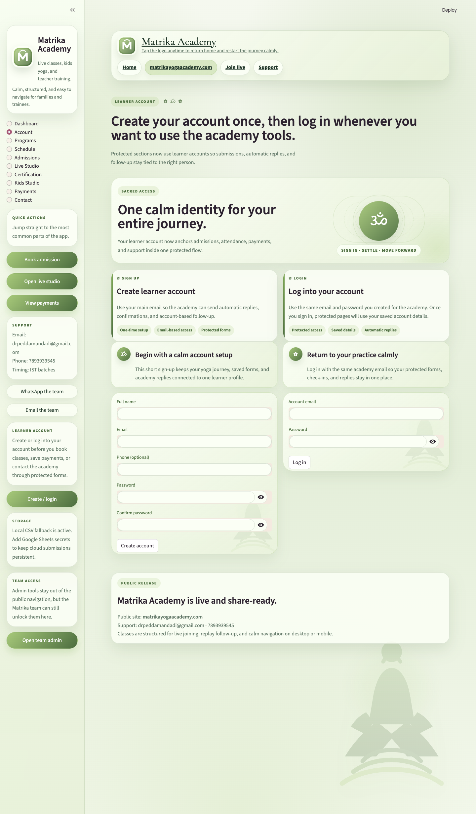

Direct contact
Call, WhatsApp, or write directly.
This portfolio now carries direct Matrika Yoga contact details so the page feels alive, reachable, and ready for real conversations instead of just looking polished.
Portfolio / Product + AI Systems
CEO of Matrika Yoga
I lead Matrika Yoga as CEO while building calm product experiences and practical AI systems. This portfolio brings together my flagship Matrika Academy work and the Google GenAI projects completed in my current workspace.
Direct contact
This portfolio now carries direct Matrika Yoga contact details so the page feels alive, reachable, and ready for real conversations instead of just looking polished.
Hobbies
A ChatGPT-crafted hobbies lane for this portfolio, shaped around the way this profile builds, leads, designs, and shows up creatively, with cooking added into the mix.
Breath, calm movement, and inner balance naturally feed the Matrika side of the work.
I enjoy exploring expressive layouts, clean systems, and interfaces that feel memorable.
Testing new agent flows, workflows, prompts, and prototypes is part hobby, part obsession.
From web-first experiences to Android wrappers, I like shaping ideas into usable products.
I enjoy turning ideas into a coherent public presence with voice, rhythm, and identity.
Creative, hands-on, and grounding. It fits the same calm-meets-craft energy as the rest of the portfolio.
Flagship product
A full academy platform rebuilt in Streamlit for learners, parents, and administrators, with an SEO-friendly public wrapper and a matching Android WebView app.
As CEO of Matrika Yoga, I shaped this app to bring the whole academy journey into one calm flow: discovery, account creation, admissions, live class access, replay follow-up, payments, contact, and protected admin review.
Page system
The app is structured as a complete learner product, not just a form hub. Visitors can browse programs and schedules, then move into account-backed admissions, live studio, certification, kids enquiries, payments, and support.
Payments + support
The payments page supports both a premium hosted flow and the academy’s older manual process, so learners can pay in the way that feels easiest.
Growth + deployment
The project is ready for Render or Streamlit Community Cloud, and it also includes an Android wrapper for a lightweight mobile app release.
Dashboard gives the academy overview, Account handles sign up and login, Programs and Schedule explain the offering, Admissions captures enrollment requests, Live Studio manages live class access and attendance, Certification and Kids Studio run focused forms, Payments handles Razorpay and UPI flows, Contact manages support, and Admin is a password-protected operations surface.
Saved datasets cover admissions bookings, attendance, certification applications, kids enquiries, payments, contact messages, user accounts, password reset requests, automatic reply logs, and Razorpay links. Integrations include Google Sheets, SMTP email delivery, Razorpay APIs, WhatsApp sharing, Zoom joining, and account-linked UPI shortcuts.
Render uses `uvicorn seo_server:app` with `APP_BASE_PATH=/app`, while Streamlit Community Cloud uses `app.py` plus secrets for Google Sheets, SMTP, admin password, and Razorpay. Admin review shows storage mode, row counts, recent entries, spreadsheet links when cloud persistence is active, and CSV exports for each workflow.




GenAI module
Alongside the Matrika product work, this workspace contains five AI agent projects spanning Google ADK, MCP, BigQuery, Maps tooling, Cloud Run, and AlloyDB.
Selected work
A focused summarization service that turns raw notes into concise executive-ready output with configurable tone and word limits.
A travel-focused weather assistant that grounds every answer in live data fetched through a custom MCP server.
An advanced bakery site-selection workflow that combines structured business analysis in BigQuery with real-world route and place checks from Google Maps MCP.
A local codelab implementation that exposes Google Cloud release notes from BigQuery to an ADK agent through MCP Toolbox for Databases.
A natural-language query experience for a custom SaaS help desk dataset using AlloyDB AI NL to generate SQL and return meaningful ticket insights.
Supporting material
The portfolio also links to the ADK foundation note, the captured submission manifest, and the combined module bundle for easier sharing.